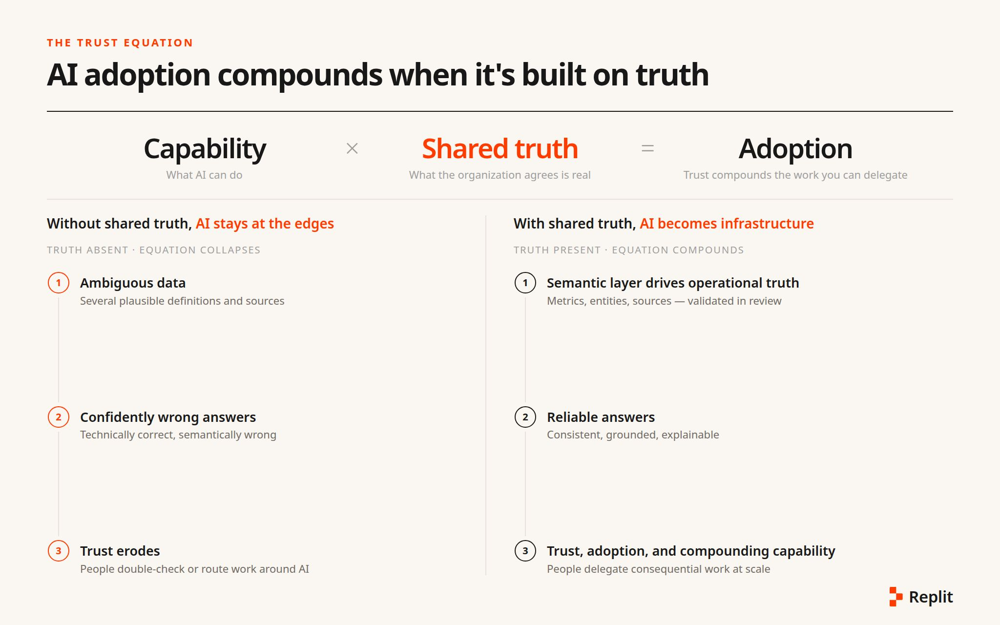
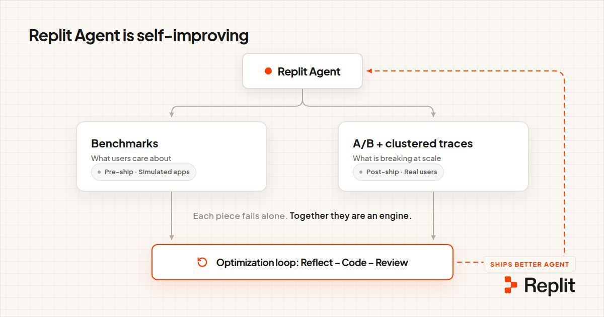
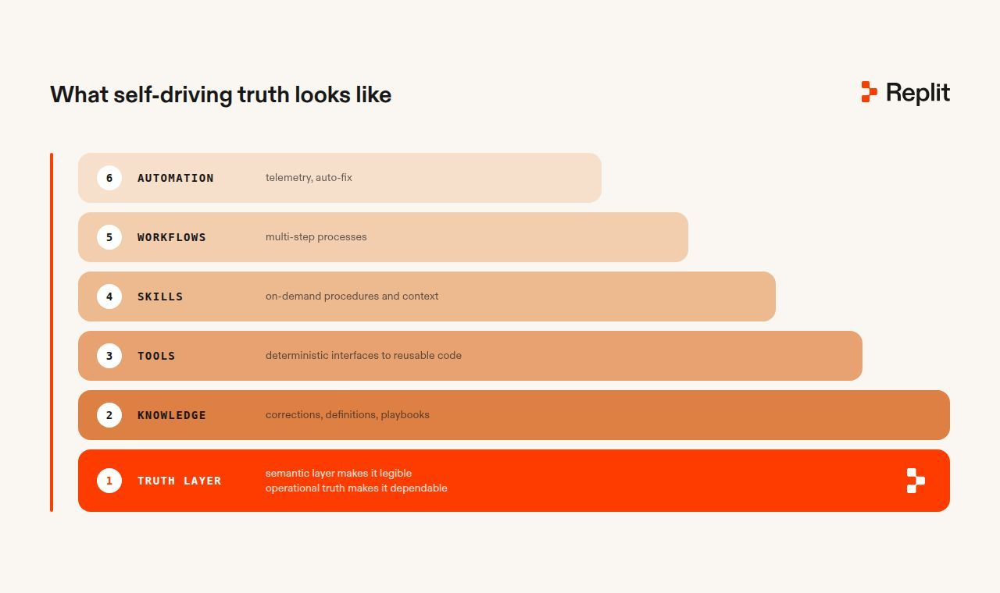
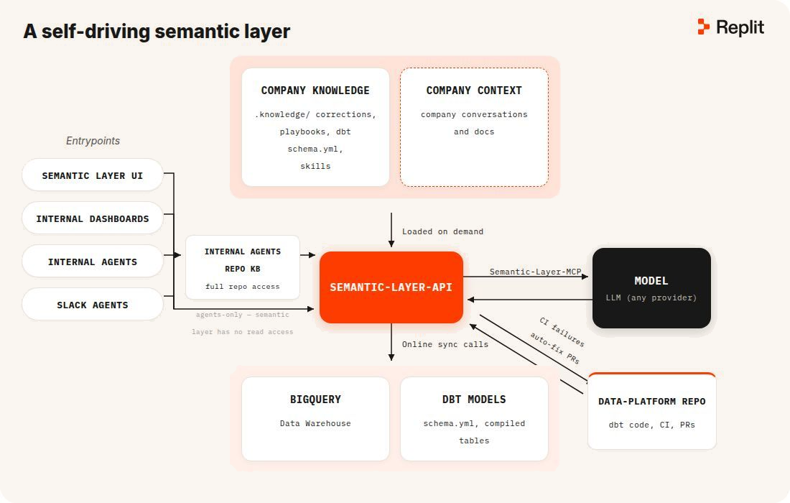
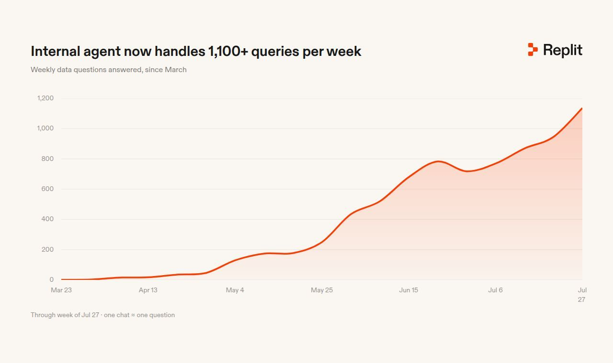

AI 采用受制于信任。用户一旦被自信满满的错误答案伤害过，就会对下一次回答反复核对，最终完全绕过系统处理关键工作。一旦如此，AI 就始终只是边缘工具，而非核心基础设施——有用，但永远不被委以著那些价值能复利的工作流。
AI 的采用受制于信任。用户一旦被自信满满的错误答案伤害过，就会对下一次回答反复核对，最终完全绕过系统处理关键工作。一旦如此，AI 就始终只是边缘工具，而非核心基础设施——虽有用途，但永远不会被托付给那些价值不断累积的工作流。在公司能从更强大的 Agent（智能体）中获益之前，这些 Agent（智能体）需要一种可靠的方式，来了解公司认为什么是真实的。

语义层告诉 Agent（智能体）哪些表是事实来源，以及它们之间如何关联。这是地基。它是必要的，但还不够。
语义层不是管道工程。它是 AI 原生（AI-native）公司的第一项治理行为：业务的共享定义、标准指标、事实来源，以及 Agent（智能体）被允许依赖的关系。没有它，Agent（智能体）遇到的就不是数据问题，而是语言问题：多个表看起来都合理，而模型没有可靠的方法来知道哪一个才是 "revenue"、"active user" 或 "customer"。
把地基做对，会改变其上方一切事物的形态。语义层不是产品，而是共享契约，它让公司能够安全地添加一套专业能力体系，而不是一个通用聊天机器人。一旦 Agent（智能体）能够在正确的实体、指标和关系上落地，它就能可靠地运行多步骤工作流、调用专门的工具、跨运行保留经过审核的知识、复用验证和分析代码，并通过已有的持久化服务来运作。
目标很简单：让公司里的任何人都能提出业务问题并获得可靠答案，而不必让数据团队变成永久的查询队列。如果系统能够承担查找正确数据、应用正确定义和验证结果的机械性工作，团队就可以专注于改进系统本身。
困难在于，模型可以针对一个它根本误解的模式写出无懈可击的 SQL。一个名为 revenue 的列不会说明是否包含退款或被封禁的用户。标记为 "canonical" 的表不会揭示它已被悄然弃用。而一个貌似合理的数字也不会告诉模型，正确答案需要三张表而不是一张。
问题不在于数据访问，而在于治理公司所认定的真实。
我们于2025年底开始解决这一问题，构建了一个数据含义与更正的记录系统。我们没有把每个错误当作孤立的失败，而是捕获出错原因、纠正方式以及原因，让下一个 Agent（智能体）继承经验。这使得 Michele Catasta 在《Continual Learning for Agents》中的观点变得具体：在生产环境中，Agent（智能体）的大部分学习并不存在于其权重中，而存在于其知识和记忆中。

这种区别很重要，因为大多数公司无法推倒重来。它们继承了多年的重命名事件、影子仪表盘、不完整的迁移、相互矛盾的定义，以及锁在人们头脑中的机构知识。传统文档很难跟上，因为它游离于工作之外。在这里，调查和更正会持续更新同一个经过评审的语料库，系统在下次运行时使用该语料库。
所有重视这个问题的人都在得出相同的结论。
第一，共同结论是：持久价值不仅在于模型本身，还在于模型周围积累并经过验证的知识层。第二，Anthropic、OpenAI 和 Meta 分别帮助确立了这一模式。第三，我们更具体的押注是：将运营真相视为共享的公司基础设施。这意味着一个经过版本控制、人工评审、与模型无关的定义和更正语料库，在使用前经过验证，并在所有接触数据的 Agent（智能体）之间共享。
Anthropic 的《Building effective agents》为 Agent（智能体）架构提供了实用的词汇：工具、检索、记忆、评估和人工检查点。我们以该工作为基础；我们的数据 Agent（智能体）并非与之竞争的框架。
2026年1月，OpenAI 描述了他们自己的内部数据 Agent（智能体），这与我们的方法趋同。它解决了同样的问题：数千张近乎重复的表，以及静默的 join 和 filter 陷阱。它也给出了类似的答案：使用包含从代码派生的表含义和人工整理的注释的分层上下文。
Meta 的 Analytics Agent（分析智能体）指向同一方向。它将来自分析师查询历史的持续刷新上下文与语义模型、可复用的分析配方、自定义校验、文档和记忆相结合。架构不同，但信号一致。
我们认为融合才是重点，而非标榜新颖。我们的具体押注是可审计性与治理：运营事实应当是一个版本受控、经人工审查、不依赖模型的语料库，在使用前经过验证，并共享给每个接触数据的智能体。
语义之所以重要，是因为它们不只是改进单个回答。语义层让系统清晰可读；运营事实层让系统可靠。二者结合，使每个智能体都能从相同的、经过审查的业务理解出发。此后每一次修正都会改进未来的每一个工作流。这正是能够安全地累积知识、工具、技能、工作流和自动化，而不是在它们之间累积错误的原因：
知识是修正、业务定义和操作手册的长期记录，能够跨越任何单次对话而存续（例如，什么算作用户或收入）。
工具通过可靠的接口暴露确定性代码：校验、可视化、解析和集成都被复用，而不是为每个问题重新构建。
技能按需封装流程和上下文：数据质量检查、指标定义和报告生成指导仅在相关时加载。
工作流协调可重复的多步骤流程：调查指标变动、分析实验、验证证据并生成报告。
自动化在团队已有的工作环境中持续运行这些工作流：遥测记录发生的情况，计划检查监视问题，自动修复提出修复建议。

可信的构建模块只有在作为一个受治理的闭环运行时才有用。我们的数据 Agent（智能体）将修正记录为持久知识，在成为标准前要求人工审查，在做出声明前验证证据，并将每个批准的修正分发给所有 Agent。这四种机制共同将共享语义转化为可信的答案，并让下一个答案变得更好。
1. 知识层是一个 git 仓库。修正不是保存的记忆，而是经过审查的 pull request。失败案例、修复方案和理由一起被提交；结果是可 diff、可回滚、数月后仍可归因的。语料库是资产；底层的模型是可替换的。格式本身也是机制的一部分。一个文档或表描述字段可以包含相同的事实，但 Agent 只能从上到下阅读它们。仓库让 Agent 能够像浏览代码库一样浏览运营真相（例如文件树、grep、diff、blame、提交历史……），使用它已经擅长的标准工具。仓库中的真理不仅是版本化的，而且是可遍历的。
2. 每个修正都由人工合并。新真理通过代码审查进入共享语料库，而不是通过自动保存提示。这是故意放慢的：成为标准的东西是经过深思熟虑且可检查的，当数字为决策提供依据时，这是你最想要的特性。
3. 验证发生在声明之前。数据 Agent 使用行数、指标定义以及之前让我们吃过亏的故障模式，检查一个数字是否可信；它返回答案时附上证据。这是正确性门槛，而非安全过滤器。
4. 一个经过审查的语料库，供所有 Agent 阅读。来自财务调查的修正会被下一个问题、编码 Agent、支持 Agent 以及任何接触数据的其他事物继承；公司在同一个指标上收敛到同一个数字。

信任传播得很快。当答案可以被信赖时，人们就不再吝惜提问。我们的内部数据 Agent（智能体）上线后，每周处理的问题量便远超 1,000 个，且都有仓库数据支撑。
这种增长并非来自指令。它通过口口相传扩散，因为答案经得起考验。如今公司每个团队都在使用它。过去需要等待分析师数天、或默默无人提出的问题，现在几分钟内就能得到附带证据的答案。整个组织获得了一种过去只属于少数人的能力。

这种采用改变了团队的角色。系统现在固化了机械性工作：该用哪张表、指标的含义、如何验证，以及昨晚的管道（pipeline）究竟如何出了故障。这让团队不再是查询队列和人肉缓存，而是转而运行这个能够正确回答问题的系统。管道故障在任何人醒来之前就会得到分诊后的修复草案；可能掩盖真实数据问题的失败会被拒绝，并附上推理理由转交给人类。每一次修正都会让每个 Agent（智能体）未来的答案变得更可靠一点。杠杆效应持续复利，而不会随人员离开而流失。
对比之下是典型的失败模式：数据团队来之不易的知识存在于人们的头脑和 Slack 频道里。有人离开，定义腐化，两个仪表盘互相矛盾，信任瓦解，访问权限收缩到少数仍然了解一切如何运作的人周围。
自动驾驶公司运行在无需人类复核每个数字的 Agent（智能体）之上。这只有在这些 Agent（智能体）共享同一个受治理的、关于何为真实的理解时才能成立，因此我们认为操作真实层（operational-truth layer）是基础设施而非工具：它让构建于其上的所有东西都值得被信任。
Michele Catasta，面向Agent（智能体）的持续学习
Amjad Masad，自驱公司
Anthropic，构建高效的Agent（智能体）
OpenAI，深入OpenAI的内部数据Agent（智能体）
Meta，深入Meta自研AI分析Agent（智能体）
参考：https://replit.com/blog/ai-adoption